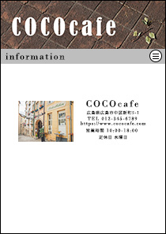

OKUNOHITOMI
PORTFOLIO
PROFILE
奥野 瞳
高校卒業後、建設会社の一般事務として4年間在籍。
その後、1年間勉強をしながら就職活動を行う。
古着を扱う会社のECサイト運営担当として約1年間在籍。
SKILL
・1からの簡易的な
・webサイト構築
・レスポンシブ
・ページの装飾
・アニメーション作成
・レスポンシブ
・フォーム制御
・画像加工
・素材の切り抜き
・バナー作成
・ロゴ作成
・アイコン作成
・スライダー
・メニュー機能
・ブログ作成
・対象データ絞り込み
抽出、追加、削除などの
作業効率の為のVBA作成
WORK
OKUNOHITOMI
PORTFOLIO
制作期間:2週間
使用スキル:
HTML/CSS/jquery/photoshop
今ご覧いただいている
ポートフォリオサイトになります。
一連の流れで見ていただきたいので
シングルページでまとめました。
ヘッダーは上部固定し、
メニューを押すと該当のタイトルに
ジャンプします。
skill、workは各要素で区切って見やすく表示をしたい為、
flexboxで横並びにしました。
COCOcafe(架空サイト)
 ソースコードはコチラ サイトはコチラ
制作期間:2週間
使用スキル:
HTML/CSS/JavaScript/photoshop
簡易的ですが、架空のカフェサイトを
作成しました。
工夫ポイントがいくつかあります。
シンプルなサイトにしたかったので
折り畳み式のメニューバーを作成しました。
Contactページのフォームでは
メールアドレスの入力に指定以外の
文字が入力されたらエラーメッセージを表示するようにしました。